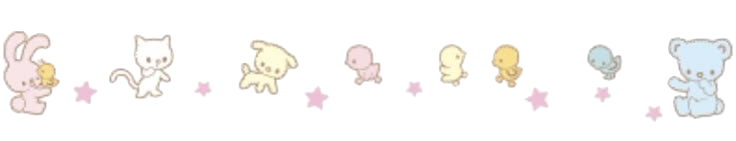

Media log
Books!
Hasna's books


I was meant to read this for my university class and felt like I wouldn’t enjoy it because obviously, it was chosen by my professor, however it was truly an amazing novel. I never thought that I’d enjoy it as much as I did and the way th...


I found this book really interesting especially since it followed cardan and spoke more on his past. I would loveeee an entire novel in his pov but idk if that will happen anytime soon 💔 Im glad that he has Jude because I honestly don’t ...

OMG, I can’t believe I’ve finally finished the series!! Jude’s shift once moving to the mortal world was insane BUT I never once would’ve expected Taryn to show up with all the news that she did. There were so many parts of this book tha...
Movies and shows!
Loading...